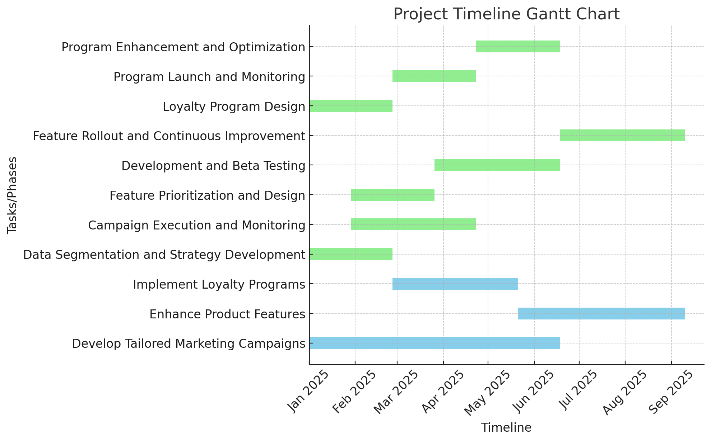

| Alternative Courses of Action | To address the problem of enhancing Bellabeat’s marketing strategy through insights derived from smart device usage data, the following alternative solutions or strategies were considered: 1. Develop Tailored Marketing CampaignsDescription: Design targeted marketing campaigns aimed at specific user segments, such as sedentary individuals or those with inefficient sleep patterns. These campaigns would highlight how Bellabeat’s products can address these challenges. Pros: - Increases user engagement by addressing specific pain points.
- Enhances the effectiveness of marketing efforts through personalization.
- Leverages existing data insights to create impactful messaging.
Cons: - Requires significant investment in data segmentation and marketing tools.
- Potential risk of alienating users outside the targeted segments.
- Success depends heavily on the quality of customer data.
Potential Risks: - Over-segmentation might dilute the brand’s overall message.
- Ineffective targeting could lead to wasted resources.
Potential Benefits: - Improved customer satisfaction and retention.
- Increased conversion rates for specific Bellabeat products.
2. Enhance Product FeaturesDescription: Develop new features in the Bellabeat app to address identified user needs, such as activity reminders, gamification elements, or advanced sleep analytics. Pros: - Strengthens the value proposition of Bellabeat’s products.
- Encourages long-term customer engagement.
- Differentiates Bellabeat from competitors.
Cons: - High development costs and resource requirements.
- Risk of feature overload, which might confuse users.
- Requires ongoing updates and maintenance.
Potential Risks: - Delayed rollout could reduce the effectiveness of new features.
- Failure to meet user expectations might lead to negative feedback.
Potential Benefits: - Increased customer satisfaction and product loyalty.
- Attracts new users looking for comprehensive wellness solutions.
3. Implement Loyalty ProgramsDescription: Introduce loyalty programs that reward users for consistent app usage and product engagement, such as discounts, badges, or exclusive content. Pros: - Boosts user retention and encourages consistent usage.
- Creates a sense of community and belonging.
- Provides opportunities to gather additional user behavior data.
Cons: - Initial setup and maintenance costs can be high.
- Effectiveness depends on the perceived value of the rewards.
- May not attract new users but only retain existing ones.
Potential Risks: - Misaligned rewards could fail to motivate users.
- Poor implementation could erode brand value.
Potential Benefits: - Strengthens brand loyalty and engagement.
- Increases the lifetime value of customers.
4. Leverage Partnerships and CollaborationsDescription: Collaborate with fitness influencers, health organizations, or other wellness brands to expand Bellabeat’s reach and credibility. Pros: - Enhances brand visibility and trust.
- Access to new customer bases through partners.
- Potential cost-sharing for marketing efforts.
Cons: - Dependency on partner’s reputation and success.
- Collaboration agreements may be complex and time-consuming.
- Results may vary depending on partner alignment.
Potential Risks: - Misaligned values with partners could damage the brand.
- Over-reliance on partnerships might limit independent growth.
Potential Benefits: - Broadens market reach and credibility.
- Creates opportunities for cross-promotion and shared innovation.
5. Invest in Data Analytics and AIDescription: Utilize advanced data analytics and artificial intelligence to improve user insights, enabling more precise targeting and personalized product recommendations. Pros: - Increases the accuracy and relevance of insights.
- Provides a competitive edge through innovation.
- Enhances decision-making processes.
Cons: - High upfront investment in technology and expertise.
- Requires significant data privacy and security measures.
- Long-term ROI might take time to realize.
Potential Risks: - Misuse or misinterpretation of data could lead to ineffective strategies.
- Data breaches could harm the brand’s reputation.
Potential Benefits: - Delivers actionable insights for sustained growth.
- Improves the customer experience through precise recommendations.
By evaluating these alternative courses of action, Bellabeat can choose a combination of strategies to effectively address user needs, enhance its marketing efforts, and drive long-term growth. | |
| Recommendations | Based on the analysis of the alternatives and the data-driven insights derived from Bellabeat’s smart device usage data, the following recommendations are proposed to enhance Bellabeat’s marketing strategy, improve product offerings, and ultimately increase market share. - Develop Tailored Marketing Campaigns Targeting specific user segments such as sedentary individuals and those with suboptimal sleep efficiency is crucial for increasing engagement. Bellabeat should use data insights to design personalized marketing campaigns that address these challenges directly. For example, users with high sedentary behavior can be targeted with campaigns that emphasize how Bellabeat products can help boost daily activity levels. Similarly, users with poor sleep efficiency can benefit from targeted ads promoting advanced sleep tracking features.
Rationale: This recommendation aligns with the criteria of Impact on User Engagement, as it directly addresses the pain points identified in the data (low activity and poor sleep quality). Tailored campaigns will increase user satisfaction and improve the relevance of marketing efforts. This strategy also supports Market Competitiveness by differentiating Bellabeat from its competitors, who may not be focusing as intently on these specific user segments. While it requires investment in segmentation and marketing tools, the potential benefits in terms of customer satisfaction, conversion rates, and brand loyalty outweigh the risks. - Enhance Product Features Bellabeat should invest in enhancing its app’s features to promote higher activity levels and improve sleep efficiency. This could include adding activity reminders, gamification elements, or advanced sleep analytics. Additionally, providing personalized wellness tips based on the data collected could further drive engagement and help users achieve their wellness goals.
Rationale: Enhancing product features aligns with Alignment with Business Goals, as it strengthens the value proposition of Bellabeat’s products and supports its mission to empower women through wellness-focused technology. This recommendation also directly addresses the Feasibility of Implementation criteria, as Bellabeat has the resources and expertise to implement app enhancements. By improving the product’s capabilities, Bellabeat can increase customer loyalty and retention, setting itself apart from competitors. The investment required for feature development may be high, but the long-term benefits in customer satisfaction, retention, and brand differentiation justify this strategy. - Invest in Data Analytics and AI Leveraging advanced data analytics and artificial intelligence (AI) will allow Bellabeat to gain deeper insights into user behavior, enabling more precise targeting and personalized recommendations. AI-driven features, such as customized wellness plans or real-time activity and sleep suggestions, could significantly enhance the user experience. Additionally, AI can help predict trends in user behavior, which will inform future product development and marketing strategies.
Rationale: This recommendation aligns with the criteria of Potential for Long-Term Growth, as AI and data analytics can provide continuous insights to support sustained business success. It also addresses Market Competitiveness by enabling Bellabeat to offer innovative, personalized experiences that outpace competitors. While the initial investment in technology is substantial, the ability to gather actionable insights and improve user engagement through AI-driven solutions offers significant long-term returns. Moreover, this strategy supports Impact on User Engagement by enabling Bellabeat to provide highly relevant and individualized recommendations, enhancing customer experience. - Implement Loyalty Programs Introducing a loyalty program that rewards users for consistent engagement with the app—such as completing daily activity goals or improving sleep efficiency—can increase user retention. Loyalty rewards can include discounts, exclusive content, or even personalized health insights. These programs can also help gather additional user data, which can be used to further personalize the Bellabeat experience.
Rationale: This recommendation supports Impact on User Engagement by incentivizing consistent usage, which leads to better customer retention and increased product engagement. It also aligns with Feasibility of Implementation, as loyalty programs are relatively straightforward to execute with minimal development requirements. Although the rewards program’s effectiveness depends on the perceived value, it has the potential to enhance User Retention and increase the lifetime value of customers. - Leverage Partnerships and Collaborations Collaborating with fitness influencers, wellness bloggers, and health organizations can help Bellabeat expand its reach. These partnerships would allow Bellabeat to tap into new customer bases, gain credibility, and share marketing costs. By working with trusted partners, Bellabeat can enhance its brand visibility and build trust with new and existing customers.
Rationale: This strategy supports Market Competitiveness by allowing Bellabeat to gain a larger share of the market through strategic collaborations. It also aligns with Potential for Long-Term Growth, as partnerships with reputable influencers or wellness brands can provide a steady stream of new customers. Although there is a dependency on the success of partners, the benefits of increased brand credibility and market visibility outweigh the risks.
Final Recommendation:After evaluating all alternatives, the most effective strategy for Bellabeat involves a combination of Tailored Marketing Campaigns, Enhancing Product Features, and Investing in Data Analytics and AI. This integrated approach addresses the key issues of low user activity and sleep inefficiency, while also positioning Bellabeat as an innovative leader in the wellness technology market. By focusing on personalized engagement, enhancing the product’s features, and utilizing advanced analytics, Bellabeat can increase user retention, attract new customers, and achieve sustainable long-term growth. | |
| Implementation Plan |

To implement the chosen recommendations for Bellabeat, we propose a clear, structured plan that addresses the necessary steps, responsibilities, resources, and potential challenges. The goal is to optimize marketing strategies, enhance product features, and ensure user engagement, based on the insights gathered from the data analysis.
1. Develop Tailored Marketing CampaignsTimeline: 3-6 months - Phase 1: Data Segmentation and Strategy Development (1-2 months)
- Segment users based on activity levels, sleep patterns, and engagement (e.g., sedentary, sleep-impaired, active).
- Develop targeted messaging that addresses specific pain points for each segment (e.g., campaigns for sedentary users highlighting activity encouragement).
- Collaborate with the marketing team to design personalized ads and content.
- Data Analytics Team (segmentation and insights extraction).
- Marketing Team (campaign design and execution).
- Product Team (ensuring messaging aligns with product features).
- User data analytics tools (e.g., R, Tableau).
- Creative team for campaign design.
- Potential Challenges & Mitigation:
- Challenge: Insufficient user data for segmentation.
- Mitigation: Regular data collection and continuous engagement with users to improve data quality.
- Challenge: Over-segmentation leading to fragmented messaging.
- Mitigation: Test campaigns on smaller segments first before scaling.
- Phase 2: Campaign Execution and Monitoring (2-4 months)
- Launch segmented marketing campaigns (e.g., ads on social media, in-app promotions, email campaigns).
- Monitor campaign performance in real-time and adjust as needed.
- Measure key metrics such as engagement rates, conversion rates, and user retention.
- Marketing Team (campaign launch and tracking).
- Data Analytics Team (monitoring performance).
- Advertising budget.
- Digital platforms for campaigns (e.g., Facebook, Instagram, email software).
- Potential Challenges & Mitigation:
- Challenge: Low engagement with targeted campaigns.
- Mitigation: A/B testing for campaign variations to identify the most effective approach.
2. Enhance Product FeaturesTimeline: 6-9 months - Phase 1: Feature Prioritization and Design (2-3 months)
- Prioritize features based on user needs (e.g., activity reminders, gamification, enhanced sleep analytics).
- Collaborate with the product team to design the features (UX/UI design, technical specifications).
- Product Development Team (feature design and prioritization).
- UX/UI Designers (design user interfaces).
- Data Analytics Team (provide insights into user behavior).
- Design and development software (e.g., Figma, Jira, Asana).
- Developer resources for building new features.
- Potential Challenges & Mitigation:
- Challenge: Technical difficulties in feature integration.
- Mitigation: Conduct internal testing and pilot programs to ensure smooth feature integration.
- Phase 2: Development and Beta Testing (4-6 months)
- Develop the new features and integrate them into the app.
- Conduct beta testing with a select group of users to gather feedback.
- Development Team (feature coding and testing).
- Beta Testers (providing feedback).
- Developer tools (e.g., IDE, testing tools).
- Beta testing platform (e.g., TestFlight for iOS).
- Potential Challenges & Mitigation:
- Challenge: Negative feedback from beta testers.
- Mitigation: Iterate on features based on feedback and adjust for the final release.
- Phase 3: Feature Rollout and Continuous Improvement (7-9 months)
- Release the features to all users.
- Monitor feature usage and gather user feedback for continuous improvements.
- Product Team (feature release and monitoring).
- Customer Support (assist users with new features).
- App update infrastructure (e.g., app stores).
- Potential Challenges & Mitigation:
- Challenge: Slow adoption of new features.
- Mitigation: Promote features through in-app announcements, tutorials, and customer support.
3. Implement Loyalty ProgramsTimeline: 3-5 months - Phase 1: Loyalty Program Design (1-2 months)
- Design the structure of the loyalty program, including reward types (e.g., discounts, badges, exclusive content).
- Define program criteria (e.g., consistent app usage, achieving wellness milestones).
- Marketing Team (designing the program).
- Data Analytics Team (defining usage metrics).
- Product Team (ensuring program integration into the app).
- Data tools for tracking user activity (e.g., Google Analytics).
- Reward systems (e.g., discounts, exclusive content).
- Potential Challenges & Mitigation:
- Challenge: Unclear reward preferences.
- Mitigation: Conduct user surveys and focus groups to understand what rewards would be most motivating.
- Phase 2: Program Launch and Monitoring (3-4 months)
- Launch the loyalty program to all users.
- Monitor participation rates, reward redemption, and overall user engagement.
- Marketing Team (program promotion).
- Data Analytics Team (monitoring participation and performance).
- User engagement tools (e.g., email, in-app notifications).
- Potential Challenges & Mitigation:
- Challenge: Low user participation.
- Mitigation: Offer bonus rewards for initial sign-up and encourage participation through app notifications.
- Phase 3: Program Enhancement and Optimization (5 months onwards)
- Evaluate the success of the loyalty program and make necessary adjustments.
- Add new rewards and features based on user feedback and engagement metrics.
- Marketing Team (optimizing program features).
- Data Analytics Team (tracking success and identifying improvements).
- Tools for tracking loyalty metrics (e.g., CRM systems).
- Potential Challenges & Mitigation:
- Challenge: Program becoming outdated or unengaging.
- Mitigation: Regularly update rewards and introduce new program tiers to keep the program exciting.
ConclusionThis implementation plan ensures that Bellabeat can effectively address its current market challenges by leveraging data insights to enhance marketing strategies, improve product features, and foster stronger user engagement. By following these steps, Bellabeat can achieve its goal of increasing market share and solidifying its leadership position in the wellness technology space. Regular monitoring and adjustments will ensure that the company stays on track with its objectives and continuously meets user needs. | |